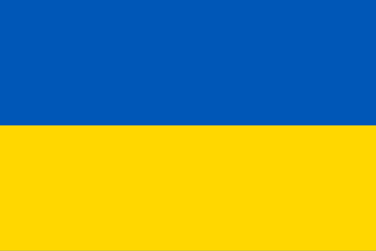
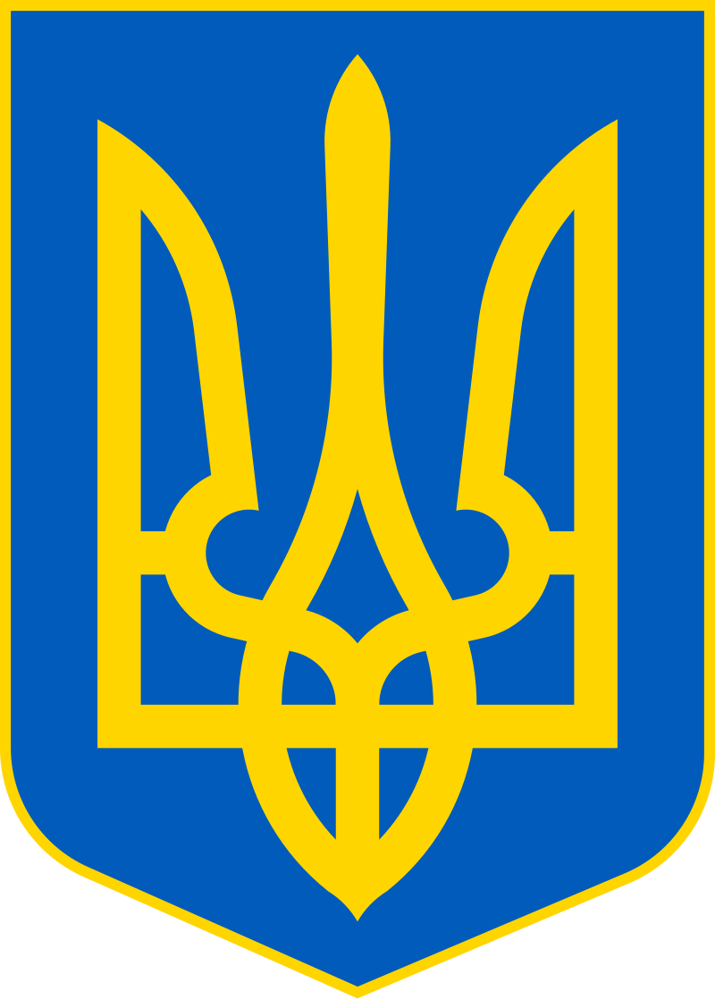

-
Історія України, її культура, суспільство,
міста, села
та природа сповнені див та приголомшливих фактів, які часом не знають і
самі
українці. Дізнайтеся більше цікавих фактів про Україну, які точно
здивують вас

Прапор України
Вражаючі факти про культуру та
історію
України
- Перша у світі конституція, в які окреслили права
громадян та уряду,
була розроблена та введена в дію у 1710 році українським гетьманом
Пилипом Орликом. Для порівняння, конституція США, була розроблена і
прийнята у 1787 році
- Запорізька Січ — суспільно-політична та
військово-адміністративна
організація українського козацтва, що була заснована у 1553-1554 роках,
сьогодні вважається одним з перших демократичних утворень у світі.
- З 12 лавр світу 4 знаходяться в Україні: це
Києво-Печерська лавра
(Київ, існує з 1051 року), Почаївська лавра (Почаїв, Тернопільської
області, з 1833), Свято-Успенська Святогірська лавра (Святогірськ,
Донецької області (отримала статус лаври у 2004 році) та
Свято-Успенська
Унівська лавра студійського уставу (Унів з 1898).
- Українські народні пісні стали підґрунтям для
створення багатьох
світових музичних шедеврів. Наприклад, композиція “Summertime” Джорджа
Гершвіна була написана на основі української колискової “Ой, ходить
сон коло вікон”, яку він почув у виконанні Національного хору України
під керівництвом Олександра Кошица
- Україна відмовилася від третього у світі (після
США та рф) за
величиною арсеналу ядерної зброї. У момент проголошення незалежності,
на території України було розташовано більш як 1000 ядерних боєголовок
і ракет.
- У 2011 році гра Tom Clancy's Ghost Recon: Shadow
Wars передбачила
події, які відбудуться через 3 роки, адже значна частина сюжету гри
присвячена українському спротиву та захисту від російських військ.
А
у грі Combat Mission: Black Sea, що вийшла у 2014 році Україна воює
проти рф разом з НАТО
- Найстародавніша у світі мапа, вибита на
кістці мамонта, а також
найстародавніше поселення Homo Sapiens знайдені в Україні, у селі
Межиріччя Рівненської області. Їм 14,5-15 тисяч років.
- На території України знаходиться
цивілізаційна колиска світу,
старша за Єгипетські піраміди та Стоунхендж – комплекс Кам'яна могила у
Запорізькій області.

Герб України
Факти та згадки про сучасну
Україну,які ви не чули раніше
- Знищений росією літак Ан-225 “Мрія” в аеропорті
Гостомеля
під
Києвом на початку повномасштабного вторгнення, мав найбільшу
вантажність у світі. До речі “Мрія” встановила 462 авіаційних
рекорди, з них понад 240 – світові.
- Один з сучасних пунктів пропуску на кордоні між
Україною та
Словаччиною – розділяє селище навпіл, утворюючи Малі Селменці та
Великі
Селменці. Сталося це через те, що колись село Селменці було розділене
між СРСР і Чехословаччиною прямо по одній із вулиць.
- Нагадаємо, що підтримати українців, а також стати
амбасадором
України у світі можна придбавши мерч Visit Ukraine. Читайте
детальніше, як підтримати країну у скрутні часи, стати невід'ємною
частиною глобальної солідарності та допомогти подолати виклики у
нашому
попередньому матеріалі.
Наверх